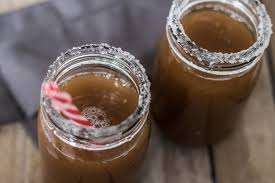

| |
|
 |
Originaire de l’Afrique, le tamarin connu et cultivé en Inde depuis de nombreux siècles,
s’est répandu dans l’ensemble des pays tropicaux… Les anciens grecs et égyptiens l’utilisaient depuis IV siècle avant Jésus Christ.
Toutes les parties du tamarinier sont utilisées en médecine traditionnelle,
mais les pharmacopées occidentales s’intéressent essentiellement à la pulpe du fruit.
Ingrédients pour 1,5l de jus :
- 170g de pulpe de tamarin
- 3l d’eau
- 150g de sucre
Préparation:
Simple et rapide. Avant toute préparation, se laver proprement les mains.
ecossez vos tamarins et récupérez la pulpe
Mettez la à macérer avec 1.5l d’eau froide toute une nuit pour lui ôter son amertume
Le lendemain, versez l’eau et écrasez la pulpe à la fourchette de façon à obtenir une pâte
Versez 1.5l d’eau sur cette pâte et filtrez
Sucrez et mettez au frais
Servez bien frais
Appréciez!
Votre jus est prêt à être dégusté !